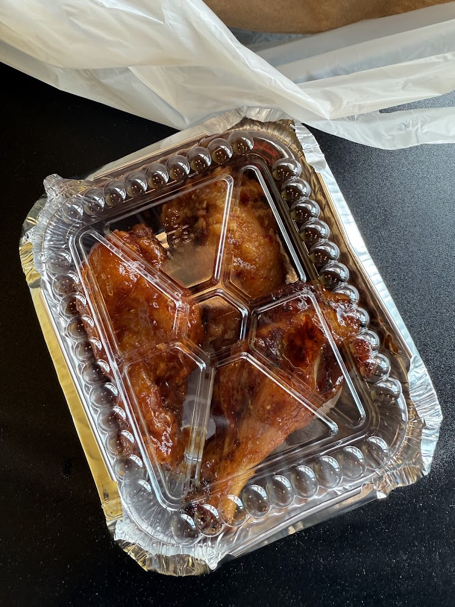

Funny story. I am on my way to the bus stop after the gym and I hop on the bus. I search for my wallet in my jacket pocket to pay the fare and I can't find it. I'm like ok it's probably in my gym bag. I go sit to find my wallet, frantically. I still can't find it. I'm like I have to still pay the fare so I pay the fare with Apple Pay. Then, I get off two stops later to search for my card holder.
I retrace my steps and on the way back to the gym, I asked this lovely woman if a wallet was returned. She gave me a phone number to call, which I did. Another woman picked up and I told her my situation. She asked me my name and I told her my name. She said that she had my wallet.
I was so happy because I had just bought my card holder a couple of months ago and it would be a total disaster replacing all my cards.
The woman gave me an address, which was about 11 minutes from where I was. Trekking in NYC snow, I made my way to this discrete building and picked up my wallet. Across from the place was a restaurant named Tropical Jerk.
The woman was so kind. I bought salad with shrimp curry. At the end, I was curious to see what else they had. Maybe, I could get something for my sister. In the end, she gave me three free wings.


